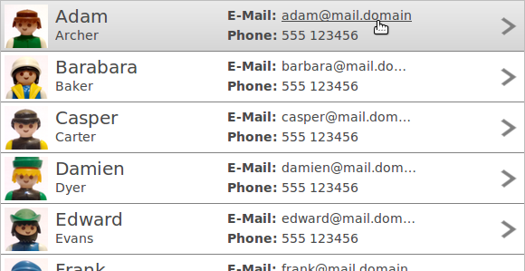
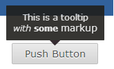

We introduced row templates, a new feature that allows you replace the column layout model of a table with a custom presentation. Templates consist of cells that can be freely arranged. A cell can display a text or an image from the table item, but also static content.

To position a cell, you have to set exactly two horizontal and two vertical dimensions (two out of left, right, and width and two out of top, bottom, and width). Here's a code example that creates a template with two cells:
Template template = new Template(); ImageCell imageCell = new ImageCell( template ); imageCell.setBindingIndex( 0 ); // bind to image from column 0 imageCell.setTop( 4 ).setLeft( 4 ).setWidth( 48 ).setHeight( 48 ); TextCell nameCell = new TextCell( template ); nameCell.setBindingindex( 1 ); // display text from column 1 nameCell.setLeft( 60 ).setWidth( 180 ).setTop( 30 ).setBottom( 8 ); nameCell.setHorizontalAlignment( SWT.LEFT ); // left-align the text in this cell nameCell.setFont( font ); ...
Cells can also be selectable.
When a selectable cell is clicked on, this click does not select the item, but triggers a
selection event with the event.detail field set to RWT.CELL.
If multiple cells in a template are selectable, cells can be given a name that is reflected
in the event.text field in order to identify the selected cell.
To apply a row template on a Table or a Tree, use the setData() method with the
new constant RWT.ROW_TEMPLATE as key:
Table table = new Table( parent, SWT.FULL_SELECTION ); // Add as many columns as needed to add multiple texts/images to items new TableColumn(); ... table.setData( RWT.ROW_TEMPLATE, template );
The call to setData() must be placed directly after the control's creation. Once a
template is applied to a control, the control will not be affected by changes to the template.
Row templates are currently supported by Tree and Table. We expect that this approach will be useful also in other contexts in the future.
The ToolTipText property and the ToolTip widget now support markup. To enable tooltip markup for on any widget with a setToolTipText method, use the RWT.TOOLTIP_MARKUP_ENABLED constant like this:
widget.setData( RWT.TOOLTIP_MARKUP_ENABLED, Boolean.TRUE ); widget.setToolTipText( "This is a tooltip<br/><i>with</i> <b>some</b> <big>markup</big>" );
For the ToolTip widget, the API is the same as it is for other
widget: toolTip.setData( RWT.MARKUP_ENABLED, Boolean.TRUE );
It is now possible to set the horizontal alignment for texts in tooltips.
Widget-ToolTip {
text-align: left;
}
Since tooltips are only as wide as their content, this only has a visible effect if the tooltip has a newline in it, e.g.:
widget.setToolTipText( "This has a \n new line" );